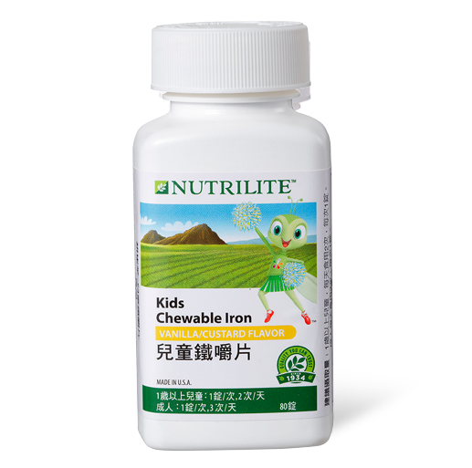

<div class="product_detail_content">
    <div class="picture">
        <div id="owl-demo" class="owl-carousel owl-theme">
            <div class="item"><span class="volume">80 錠</span></div>
        </div>
    </div>
    <div class="infomation">
        <h3>兒童鐵嚼片<br><span class="small">方便補充鐵質，強健媲美大力水手　</span></h3>
        <p>寶貝身體在發育，不斷製造血液，而「鐵質」是組成血紅素的重要成分！本產品2錠就能提供相當2.5份菠菜的鐵，營養充足才能強健體魄！孕婦及成人也可以補充喔！</p>
        <h4>產品特色</h4>
        <ul class="list_dot">
            <li>以乳酸亞鐵為鐵的來源，好吸收</li>
            <li>每天２錠可提供7.34毫克的鐵質</li>
            <li>香草風味，美味可口，深獲孩童喜愛</li>
            <li>可咀嚼，方便食用</li>
        </ul>
        <!-- <a class="download" href="pdf/products_kids_iron.pdf" target="_blank">營養成分PDF</a> -->
        <div class="btnWrap">
            <div class="showDetail">營養成分</div>
            <a class="download" href="pdf/products_kids_iron.pdf" target="_blank">下載PDF</a>
        </div>
        <div class="detailTable">
            <table class="tableizer-table">
                <thead>
                    <tr class="tableizer-firstrow">
                        <th>重要營養成分</th>
                        <th>每錠含</th>
                    </tr>
                </thead>
                <tbody>
                    <tr>
                        <td>鐵</td>
                        <td>3.67 毫克</td>
                    </tr>
                </tbody>
            </table>
        </div>
    </div>
</div>
